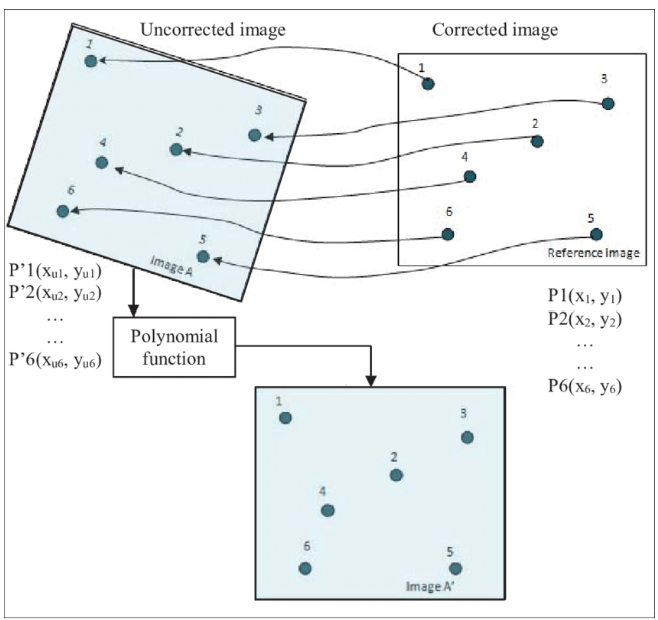

3 Week 3: Image Correction and Data Joining
Virginia Norwood, creator of Landsat technology
- MIT graduate, creator of Landsat and MultiSpectral System (MSS), pioneer of remote sensing.
Why image corrections are needed/ pre processing requirements
Needed when technical defects and deficiencies of the sensor and data transfer systems lead to mistakes in the image data construction.
Raw remotely sensed image data are full of geometric and radiometric flaws caused by the curved shape of the Earth, the imperfectly transparent atmosphere, daily and seasonal variations in the amount of solar radiation received at the surface, and imperfections in scanning instruments, etc
Imagery correction types
Geometric
Purpose
To remove geometric distortion from a distorted image
Image distortion can happen through rotation of Earth, wind from plane, uneven topography, off-nadir angle.

Steps
Ground Control Points (GCP) for both image and map/reference coordinates are identified
Sensor model is built using GCP to give geometric transformation coefficients
- Transformation algorithms used to convert geometric (lat long) to geocentric (x,y) coordinates
Coordinates are plotted to ensure line of best fit (minimal MSE) and variance for MSE (RMSE)
Resampling (used to calculate pixel values when one raster grid is fitted to another) to fix shift in data from sensor modeling
Two images (one correct/gold standard) overlap in order for pixels to line up
Atmospheric
Purpose
To remove scattering and absorption effects of the atmosphere on the reflectance values of images taken by satellite or airborne sensors
2 main sources of environmental disturbance: atmos scattering & topographic attenuation (dimming and blurring effects)
Atmos correction is only necessary for certain situations:
Spectral signature (unique wavelength radiated by an object. Different objects have different signatures) through space and time
Biophysical parameters (i.e. temperature, leaf area index, NDVI) are needed
Scattering leads to adjacency = radiance from nearby pixels is mixed into pixel of interest
Correction methods:
Relative (when compared to others)
Spectral band = A wavelength range in the spectrum of reflected or radiated electromagnetic (EM) energy to which a remote sensor is sensitive
To normalise intensities of different bands relative to each other within a single image
To normalise intensities of bands from many dates to one date
Relative correction methods
Dark object saturation = Effects of atmos scattering are removed by finding the darkest pixels in an image and subtracting their values from all other pixels
Pseudo-invariant features = technique is based on the statistical invariance of the reflectance of man-made in-scene elements such as concrete, asphalt, and rooftops. Differences in the grey-level distributions of these invariant objects is assumed to be a linear function and is corrected statistically to perform the normalisation. The technique exhibits errors in reflectance of approximately 1% for Landsat TM and high-resolution air photo imagery in all spectral regions studied
Absolute = definitive
Changing of digital brightness into scaled surface reflectance (amount of light reflected by the surface of the Earth)
Absolute correction is done via atmospheric radiative transfer models (many to select from)
Absolute data requirements
Model - can be selected from the tool
Local atmospheric visibility - from places such as a weather station, etc
Image altitude
Absolute tools (there are free and more expensive tools
Empirical line correction
Alternative to radiative transfer modeling
Uses field spectrometer
measures albedo (expression of the ability of surfaces to reflect heat from the sun)
& spectral reflectance (fraction of incoming solar radiation that is reflected from Earth’s surface)
How it works = takes in light, break it into its spectral components, digitise the signal as a function of wavelength, and read it out and display it through a computer.
Orthorectification/topographic
Distortions are removed to allow for pixels to be viewed from straight above (at nadir)
Requires sensor geometry and an elevation model (DEM = topographic representation of bare Earth surface excluding physical characteristics)
- Features within orthorectified image will be straightened (as influence of topography has been removed.
Formulae that can be used for correction
Cosine correction = refers to the human perception of light incident on a surface. Light that lands on a matte surface is perceived based on the angle of incidence. Light coming from directly above is perceived more brightly than light that is perceived at low angles.
C correction = advance of cosine correction
Minnaert topographic correction = Used to interpret rough terrain by expressing radiance factor as function of phase angle
Statistical empirical correction
Radiometric calibration
ability to convert the digital numbers recorded by satellite imaging systems into physical units. Those units are either radiance (W/m2/sr/µm) or apparent top-of-atmosphere reflectance
measurement of electromagnetic radiation and atomic particle radiation
important to successfully convert raw digital image data from satellite or aerial sensors to a common physical scale based on known reflectance measurements taken from objects on the ground’s surface. This type of correction is important for reliable quantitative measurements of the imagery.
differences show up in the spectral signature associated with each pixel, and not difference in image.
Data joining
What is it?
- technique that combines several images with overlapping parts (the images may be obtained at different times, different viewing angles or by different sensors) into a large-scale seamless high-resolution image
Why it’s necessary
- Image mosaicing is often a necessary process to cover a large and full region of interest (ROI) for many remote sensing applications (e.g., geographical mapping, resource and environmental monitoring, and disaster monitoring).
How it’s done
Overlapping of different images
Feathering = soften the hard edges of an object in your image, i.e. blending of hard lines
Base image will usually have one or more images layered on top
Image enhancement
Considerations
- Data joining allows image classification, i.e. the task of assigning classes—defined in a land cover and land use classification system, known as the schema—to all the pixels in a remotely sensed image. The output raster from image classification can be used to create thematic maps.
Image enhancement
What is it = the process of making an image more interpretable for a particular application (Faust, 1989). Enhancement makes important features of raw, remotely sensed data more interpretable to the human eye.
Method
Contrast enhancement
Spatial filtering
Density slicing
Key concepts
Spectral (from EM spectrum) = the intensity of light as it varies with wavelength or frequency.
Irradiance = Energy at all angles and directions.
Radiance = energy reflected from source to sensor.
Reflectance = ratio of the amount of light leaving a target to the amount of light striking the target. It has no units. In other words, property of material/surface being observed.
Surface reflectance = amount of light reflected by the surface of the Earth. It is a ratio of surface radiance to surface irradiance, and as such is unitless, with values between 0 and 1. In short, efficiency of surface in reflecting radiant energy.
Spectral band = a region/range/layers in the EM spectrum in a range of wavelengths.
Spectral signature = unique wavelength radiated by an object.
Applications
Raw remotely sensed image data are full of geometric and radiometric flaws caused by the curved shape of the Earth, the imperfectly transparent atmosphere, daily and seasonal variations in the amount of solar radiation received at the surface, and imperfections in scanning instruments, among other things.
Image correction and enhancement methods allow for clearer image interpretation, resulting in more accurate interpretations of topography and physical features, which in turn allows for accurate analysis and on-the ground responses pertaining to land monitoring, disaster response, environmental study, and resource exploration.
Reflection
Although most remotely sensed data nowadays has already been corrected and enhanced for ease of use, it is important to understand the methods and relevant situations.
No method is perfect, depends on situation and information available in order to conduct correction.
Additionally, not all remotely sensed data has been image corrected (depending on sensor source).
Ultimate goal is to eliminate any distortions to the best of our abilities to produce an image that best reflects the at-ground status of the location pictured by removing any possible factors of interference.